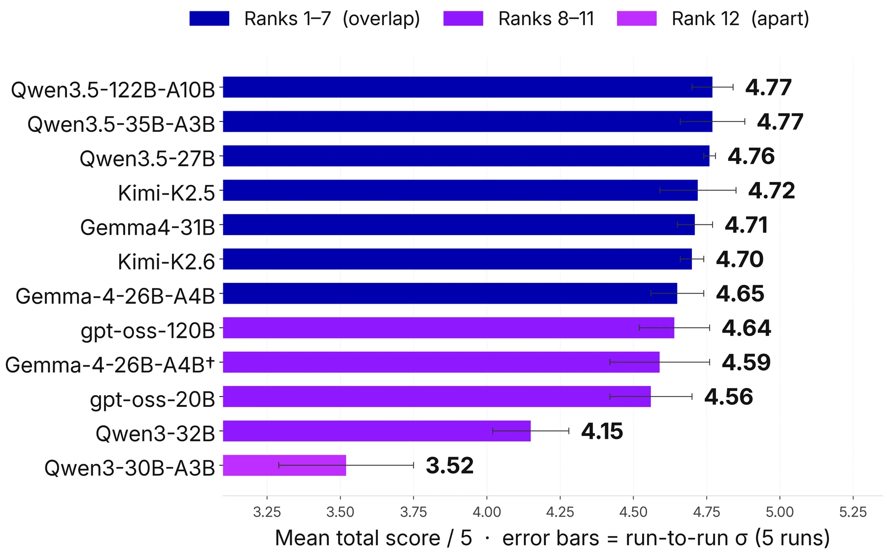
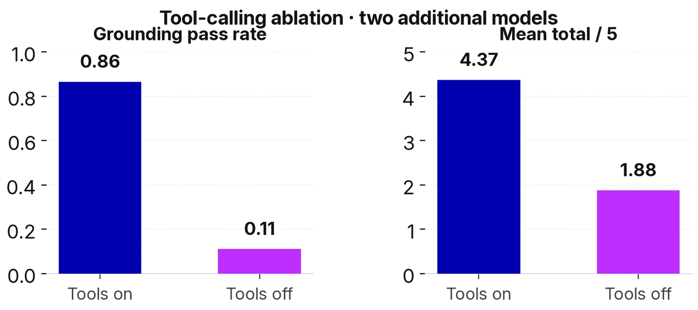

ACM RecSys 2026
RecSys 2026 brings together researchers and practitioners working on recommendation. Our paper is part of its GenAI-eCom workshop programme.
GenAI-eCom workshop paper · ACM RecSys 2026
A Reproducible Evaluation Framework
A product-search score cannot tell us whether an assistant asks the right questions, recommends products it actually found, or completes a cart action correctly. We propose a reproducible benchmark for the full multi-turn shopping journey, using controlled scenarios, simulated customers, commerce tools, and trace-based evaluation.
Paper for the Third Workshop on Agentic and Generative AI for E-Commerce, Minneapolis · 28 September 2026.
About this paper
This page unpacks the paper’s method, evidence, practical implications, and limits. The contribution is a reusable evaluation framework; the twelve-model jeans study is its controlled worked example rather than a universal ranking of shopping assistants.
RecSys 2026 brings together researchers and practitioners working on recommendation. Our paper is part of its GenAI-eCom workshop programme.
This workshop covers generative AI for search, recommendation, and shopping agents. It is the publication venue for this paper.
Research in one view
Search relevance alone misses what happens before and after retrieval. The framework follows an assistant from the shopper’s opening request to a possible cart action, then scores the complete conversation against its tool calls and results.
Fix the catalog, opening request, prompt, and tool interface; run each assistant with the same customer-simulation protocol.
See the framework 02Judge intent, clarification, recommendation, cart correctness, and grounding against the recorded dialogue and tool results.
Explore the evidence 03Repeat the journeys, inspect variation, and test the judge. The twelve-model jeans study illustrates the method on deliberately hard scenarios.
Read the studyThe framework
Scenarios start from shopping queries and a fixed product index. A GPT-4.1 customer simulator follows a shopping goal while responding to the assistant under test. The assistant can search the catalog and simulate an add-to-cart action; the dialogue and tool results are recorded for scoring.
A fixed product index and queries from Semrush and Pinterest ground the task.
The first customer message and the scenario’s shopping goal are fixed.
The customer simulator responds to each model; assistants share a system prompt and tool interface.
Claims, calls, results, and actions form the evidence record.
Score five binary rubrics, repeat conversations, and check judge reliability.
Catalog · opening message · system prompt · search and cart tools
Behaviour profile · complete trace · repeated estimates · evaluator sensitivity
Tracks the shopper’s evolving goal across the conversation.
Asks targeted questions when the request needs refinement.
Matches suggestions to the preferences the shopper expressed.
Executes and reports transactional actions faithfully.
Connects every product claim to evidence returned by a tool.
Each conversation receives five pass/fail verdicts, one per rubric, for a total from 0 to 5. The rubric charts show mean pass rates over scenarios and runs. GPT-4.1 provides the headline scores; a separate cross-family panel checks how sensitive those verdicts are to the judge.
A worked shopping journey
A published paper example starts with a shopper asking for a vintage-wash denim shirt. The assistant confidently describes a shirt before searching. Its later catalog call returns jeans, leaving the original product claims unsupported.
The conversation sounds fluent. The evidence record shows intent drift, an irrelevant recommendation, and a grounding failure. Behaviour-level scoring captures the difference.
Paper example · scenario gisela_ribeiro_3 · Qwen3-30B-A3B · evaluated trace is not included in the public release
The controlled study
The primary study builds a jeans catalog from Amazon Reviews 2023 and starts with queries drawn from Semrush and Pinterest. An LLM turns these into simulated shopping scenarios; a screening filter retains twenty in which at least one model fails a rubric. The models receive the same catalog, opening message, system prompt, and tool interface.
The scenario filter favours cases where at least one screening model fails a rubric. This construction creates a demanding comparison set. Representative deployment quality requires a separate sample of ordinary customer traffic.
Empirical findings
The five rubrics show where each model succeeds or fails. Repeated runs and bootstrap intervals help distinguish broad performance bands from fragile differences in rank.


The highest-scoring group shares overlapping confidence bands. Capability profiles and deployment constraints offer a stronger basis for selection than decimal rank.
Its pass rate is 0.77–0.84 for ranks 1–7 under GPT-4.1. This points to room for improvement, without establishing a fine-grained ordering within the group.
The broadest rubric spread appears in product-claim grounding, connecting model quality directly to evidence returned by commerce tools.
A 27B model sits near larger systems in this roster. Architectures and providers also differ, so these scores do not isolate an effect of parameter count.
Tool-calling ablation
Across two additional models, disabling tool calling lowers total scores by 2.2–2.8 rubric passes and reduces Grounding from 0.83–0.90 to 0.06–0.16. Reliable commerce agents need access to catalog evidence, along with behaviour that uses that evidence correctly.

Dialogue resampling contributes more apparent instability than re-judging the same frozen trace. Five-run estimates reduce the risk of acting on a fortunate single conversation.
Qwen3-32B ranks 11th of 12 in the curated jeans study, then first among five models in each of three smaller categories. Both product domains and scenario-selection protocols change, so this is directional evidence of rank sensitivity rather than a category effect in isolation.
Cross-family arbitration reduces verdict swing from 24.5% to 9.2%. On 103 hard cells from one human rater (11 pass / 92 fail), the reliable stack reaches 88.3% accuracy, below an always-fail dummy at 89.3%; κ = 0.273 is the more informative agreement figure. GPT-4.1 is too lenient on this slice (κ = −0.13).
Using the framework
The jeans study demonstrates the evaluation protocol. A team applying it to its own store would rebuild the catalog and scenarios, keep the comparison conditions fixed, and check whether improvements hold across ordinary traffic as well as difficult cases.
Sample real query types, product constraints, and cart actions from the merchant’s catalog. Keep a separate set of deliberately difficult scenarios for diagnosis.
Hold scenarios and evaluation settings constant while changing the model, prompt, retrieval, or tool interface. Inspect the traces behind each rubric movement.
Repeat a fixed scenario pack before release. A better recommendation score may still coincide with unsupported product claims or incorrect cart confirmations.
Run each scenario more than once, show rubric-level results and variation, and validate the judge against human reviews on the failures that matter most.
Interpretation and next steps
The jeans study is a deliberately difficult worked example. Its controlled construction supports diagnosis and method development. Broader deployment claims need representative traffic, matched category protocols, and deeper human validation.
Twenty model-breaking scenarios emphasize capability differences within one primary catalog. The roster reflects models available to the evaluation infrastructure at the time of the study.
The headline GPT-4.1 judge is stable yet lenient on the hard human-labelled slice. Human calibration currently covers 103 rubric cells from one reviewer.
Raw rankings depend on catalog, scenarios, prompt, tools, provider, and judge. The controlled structure and behaviour-level analysis are the transferable contribution.
A broader RAIL research programme
This paper supplies the measurement layer: it reveals where an agent succeeds or fails under controlled conditions. Related RAIL work carries that evidence forward by verifying live journey claims, exposing constrained decision traces, and adapting the interface to the customer and the interaction.
After this benchmark diagnoses journey-level weaknesses, trace invariants verify live agent claims against the state recorded by commerce systems.
Read the paper ICSR 2026 · ASIMOV · AcceptedWhere the benchmark scores outcomes, this Senka Krivic-led work adds symbolic constraints, contestability cues, and an auditable plan trace to retail assistance.
Read the public report ACII 2026 · Demo under reviewThe same evaluation discipline extends to voice and adaptive interfaces, where emotion and conversation dynamics can change the experience in real time.
Visit ACII 2026Open research resources
The public release contains the jeans catalog, twenty frozen scenarios, a minimal runner, the five-rubric judge interface, and figure data. It supports local smoke tests and new evaluations through OpenAI-compatible model and judge endpoints. The public judge is a reference implementation and does not reproduce the internal evaluation service bit for bit.
Citation
@inproceedings{vorontsov2026benchmarking,
title = {Benchmarking Models for Conversational E-Commerce:
A Reproducible Evaluation Framework},
author = {Vorontsov, Yuri and Carvalho, Diogo S. and
Vorontsov, Anastasia and Platonova, Anna and
Gorovoy, Vladimir and Briskin, Ilya and
Tseitlin, Felix and Krivic, Senka and Ahmad, Salman},
booktitle = {Proceedings of the Third Workshop on Agentic and
Generative AI for E-Commerce (GenAIECommerce 2026)},
year = {2026}
}